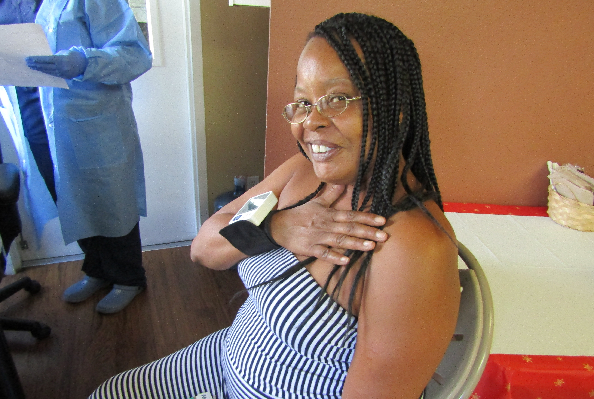
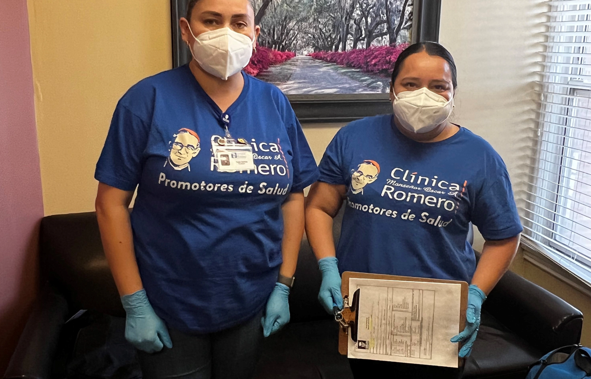
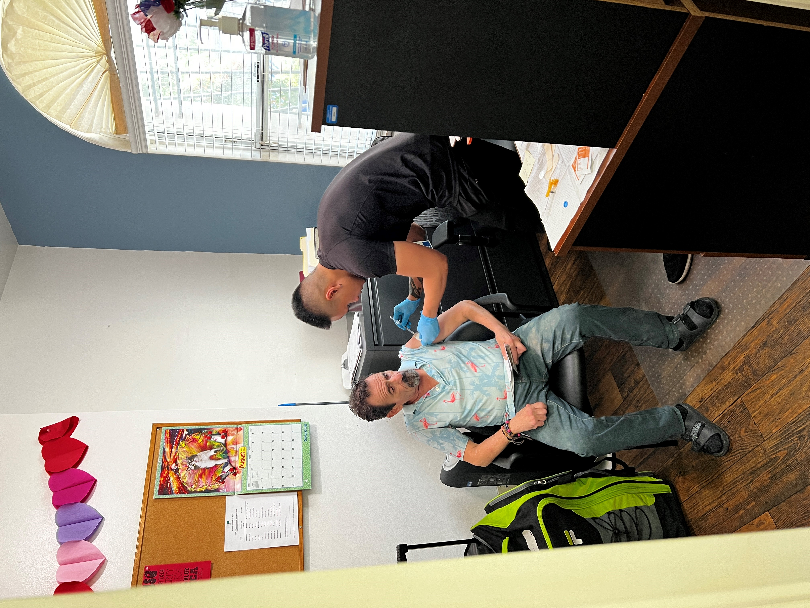
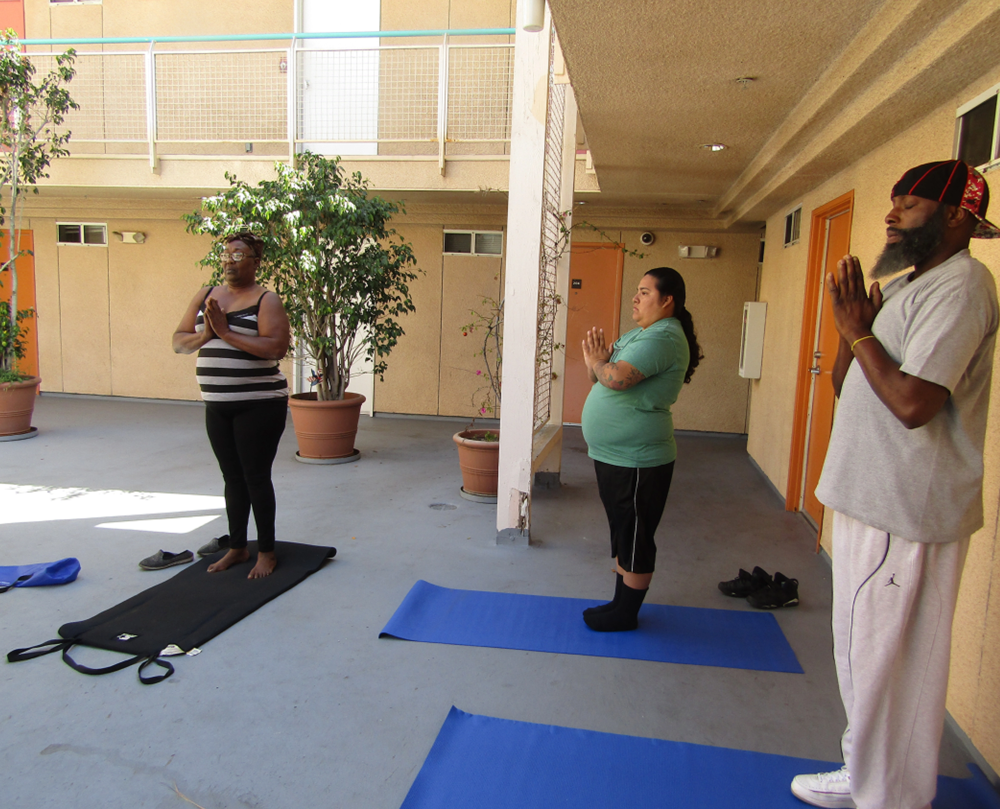

Health and Housing Services That Help Tenants Build Stable Lives
Health and Housing Services support stable housing by connecting tenants with health care coordination, resources, health education, community engagement, and collaborative partnerships.

Health Care Coordination and Mental Health Support Strengthen Housing Stability
Tenants receive coordinated support for physical health, mental health, and substance use needs.
Case managers and care teams help identify needs, develop plans, coordinate resources, and provide health care coordination.
Consistent support helps individuals with complex health conditions remain connected to needed care.
Voluntary health and wellbeing opportunities strengthen the impact of direct services and support tenant wellbeing.
Community participation helps reduce isolation and supports overall wellbeing.
Sustaining the Resources and Partnerships That Make Health and Housing Services Possible


Supportive services depend on organizational resources, community partnerships, funding, volunteers, and coordination that enable long-term delivery of Health and Housing Services.
Expanding Capacity Through Community Contributions
Community partners, volunteers, funders, and educators help expand available resources and opportunities.
Contributions may include funding, health programming, screenings, incentives, and specialized expertise.
These contributions strengthen the organization’s ability to continue providing Health and Housing Services that support tenant wellbeing and housing stability.
Strengthening Services Through Organizational Coordination
Program coordination supports the delivery of health-related services and activities.
Partnerships with external organizations broaden access to health education, screenings, and specialized resources.
Ongoing coordination helps ensure Health and Housing Services remain available and responsive to tenant needs.
Supporting Tenant Wellbeing Through Health Education and Skill Development
Health education and skill-building activities help tenants develop practical knowledge, healthy routines, and experiences that support long-term tenant wellbeing.

Building Everyday Health Knowledge and Skills
Tenants participate in activities focused on nutrition, healthy eating, budgeting, chronic disease prevention, and medication management.
Health education activities provide practical guidance that supports informed health-related decisions.
Demonstrations, meals, recipes, and hands-on activities help participants apply new knowledge in everyday life.
Encouraging Participation Through Physical and Social Health Activities
Activities include yoga, meditation, dancing, walking groups, and other participatory experiences.
These activities encourage healthy routines, physical activity, stress reduction, and personal goal development that contribute to tenant wellbeing.
Shared participation creates opportunities for social interaction, community engagement, and mutual learning.